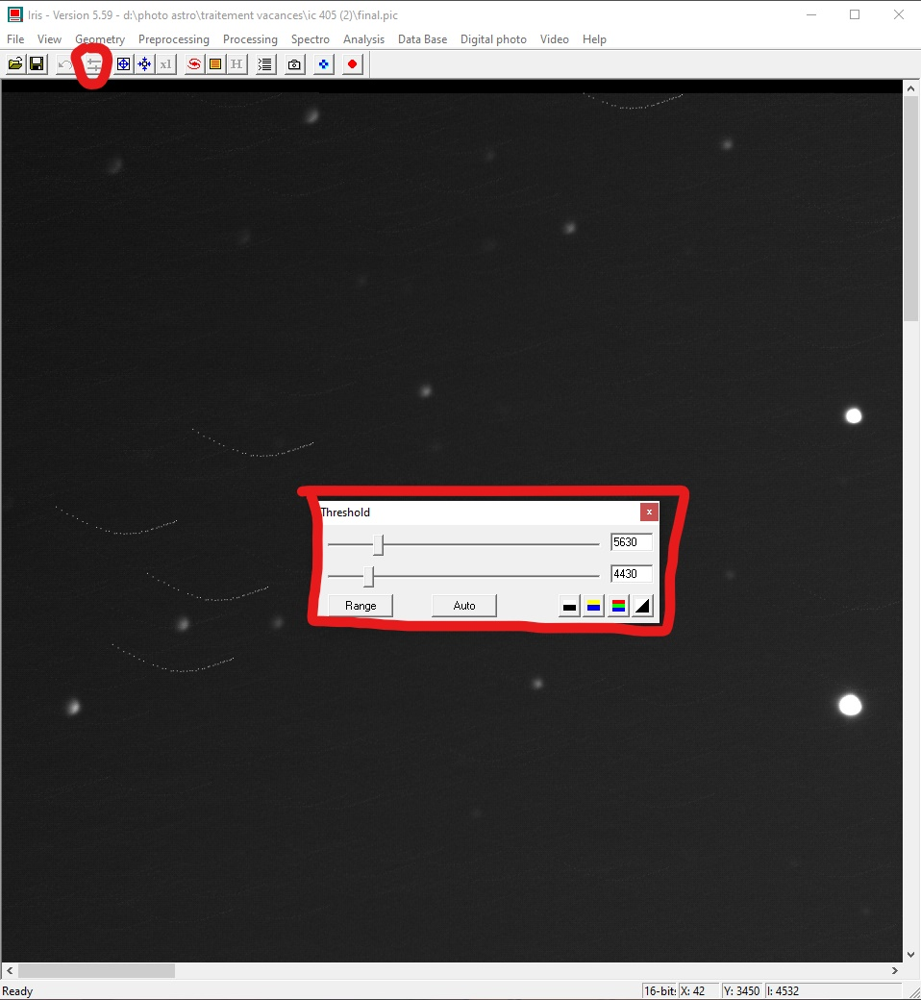

Bienvenue, sur ce site vous trouverez tout le nécessaire pour faire
un traitement de photo astronomique de base à l'aide du logiciel iris.
Le logiciel est entièrement en anglais et un peu brouillon au premier abord
mais pas de panique, une fois une bonne prise en main ce logiciel est très
agréable à utiliser. Je vous invite donc à suivre ce petit tuto et à naviguer
à l'aide du sommaire ci-dessous. Si vous souhaitez faire un traitement
en couleur, je vous invite à visiter la page dédiée en cliquant
ici.
Installation de iris :
Pour installer le logiciel iris, il faut se rendre sur leur site et télécharger
le fichier zip (cliquez
ici pour le
télécharger).
Une fois téléchargé, il faut le décompresser dans le dossier où vous
souhaitez que votre logiciel soit installé. Si tout se passe bien, vous devriez
avoir un interface comme celui ci :

Configuration de iris :
Avant de commencer la configuration, je tiens à dire que ce tutoriel vous permettra
de faire une configuration "de base". Beaucoup de paramètres seront donc laissés par défaut.
De plus, ce tutoriel part du principe que vos photos sont au format "CR2". Regardez bien
si c'est votre cas avant de vous lancer. Pour prendre des photos avec ce format,
je vous invite à regarder la notice de votre appareil photo ou à regarder un
tuto sur internet.
Dans un premier temps, nous allons configurer les paramètres qui permettront
de définir l'espace de travail. Pour cela, il faut se rendre dans les volets
roulants en haut, il faut aller dans "File" puis sélectionnez "Settings".
Le premier paramètre à changer sera le "Working path". Ce paramètre est très important
car c'est ici que vous allez définir où vos images vont être enregistrées. Pour
le choisir, il suffit de sélectionner les points de suspension. Deuxième
paramètre très important, le "File type". C'est l'extension que vos photos doivent
avoir. Pour mon cas, je le mets en "PIC", mais cela dépend de l'extension de vos photos.
Pour connaître l'extension de vos photos, il faut faire un clic droit sur la photo
et sélectionner "Propriétés". Le type d'extension sera marqué sur à côté de "Type du fichier".

Une fois cela fait, on va effectuer un réglage en fonction de l'appareil photo.
Avant de se faire, il faudra donc vous munir de la référence de votre appareil photo.
Pour commencer, il faut cliquer sur le petit appareil photo sur la barre des
menues rapides. Une nouvelle fenêtre devrait alors apparaître. Ici, nous réglerons
le "Model". Dans le menu déroulant, il vous suffit de choisir le modèle de votre
votre appareil photo. Si votre modèle n'est pas dans la liste, il faudra se rendre
sur la page web du fabricant pour trouver la balance RGB. Vous pourrez alors
le remplir dans la section "White balance" en activant "Apply" et en entrant
vos valeurs. Dans notre cas, nous changerons aussi le "RAW interpolation method"
en le passant sur "Linear".
Première compilation de photos :
Maintenant que tout est enfin prêt, commençons le travail. Avant de se lancer
dans la compilation, il faut comprendre un phénomène très simple. Quand on prend
des photos à l'aide d'un télescope, très souvent les astres ne sont pas à la
même place d'une photo à l'autre (malgré le fait que vous puissiez avoir un moteur
intégré au télescope pour limiter ce phénomène).
Ce qui fait que si on veut les compiler, il est fort probable que les astres
se démultiplient. C'est pourquoi, nous devrons faire en sorte que les
astres soient au même emplacement sur la série de photos. On va donc faire un alignement des étoiles.
Bon, fini les explications, place à la pratique. Pour commencer, il va falloir
convertir vos photos au format "PIC". Heureusement, iris propose de le faire
facilement. Pour se faire, il faudra aller dans le menu "Digital photo" puis dans
"Decode RAW files...".
Il vous faudra alors faire un glisser-déposer sur la
fenêtre principale (sous files .cr2). Si cela se passe bien, vous devriez
avoir le chemin de vos photos (dans mon cas c'est : "D:\Photo astro\Traitement Vacances\IC 405 (2)").
Il reste donc à mettre un nom dans "Name". Je vous conseille vivement de mettre
des noms explicites. Cela évitera de vous mélanger les pinceaux à la fin, car vous
verrez qu'à la fin on aura beaucoup de fichier. Dans mon cas, je traite des photos
de l'amas IC-405, je vais donc les nommer "IC_405-". Je finis toujours par un "-" (tiret du 6)
car iris va automatiquement ajouter un numéro à la fin (de 1 jusqu'au nombre de photo entrées).
Ensuite cliquez sur "->CFA" pour convertir vos photos au format "PIC".
Si vous vous souvenez bien, nous allons faire l'alignement des étoiles.
Dans le menu, cliquez sur "Processing" puis "Stellar registration...".
Une nouvelle fenêtre apparaît. Il faudra tout d'abord renseigner
"Input generic name" qui est le nom que vous avez attribué à l'étape
précédente. Le "Output generic name" sera le nom donné une fois l'alignement fait.
Personnellement, je les nomme comme mon ancien nom mais avec un r à la fin.
Je choisis donc "IC_405r-". Il faut aussi renseigner le nombre de photos
dans "Number".
Pour les prochains renseignements, je vais vous demander de me
faire confiance, si vous voulez plus de détail, je vous invite à regarder
par vous même sur internet.
Pour nous, on fera avec les options "Global matching" et "Quadratic".
En fonction de la puissance de votre ordinateur et en fonction du nombre
de photos l'opération sera plus ou moins longue (cela peut devenir très long
si vous avez beaucoup de photos !).
Aller courage, c'est la dernière étape avant d'avoir une votre image !
Si vous avez bien suivi, on va donc effectuer la compilation. Pour ce faire,
rendez-vous dans "Processing" puis "Add a sequence...". Une nouvelle fois,
une nouvelle fenêtre va s'ouvrir. Nous aurons deux champs à compléter. Le premier
"Input generic name" qui est le nom des photos qui sont alignées.
Et j'insiste bien sur le fait que c'est le nom des photos qui sont alignés
(celles qui ont subi l'étape d'avant !!!).
Encore une fois, il faudra entrer le nombre de photos dans "Number".
Sinon, pensez à vérifier que l'option "Arithmetic" est cochée.

Si vous ne voyez pas grand-chose, pas de panique c'est normal. Appuyez
sur le bouton avec les deux petites barres dans le menu. Une petite fenêtre
nommée "Threshold" apparaît. Cliquez sur "Auto". Pour voir l'entièreté de
votre image, zoomer ou dézoomer à l'aide des deux logos bleu dans le menu.
Bravo, tu as fini ton premier traitement de photo !!! N'oublies surtout pas
de la sauvegarder.